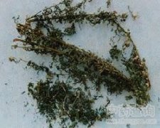

牡蒿

拼音
Mǔ Hāo
别名
齐头蒿、野塘蒿、土柴胡[湖南、广东]
来源
菊科艾属植物牡蒿Artemisis japonica Thunb.以全草入药。未开花前采收，夏季晒干。
生境分布
生长于山坡路旁或荒地上。我国大部分地区均有分布。主产于江苏、四川等地。
药材特点
多年生草本，茎直立，高60～90厘米。叶互生；茎中部以下的叶，基部楔形，先端羽状3裂，中间裂片较宽，又羽状3裂；中部以上的叶线形，全缘；叶两面绿色，无毛。头状花序，排列成圆锥花序状，每一头状花序球形，直径约1.5毫米；总苞球形，苞片3～4层，外层苞片较小，卵形，内层苞片椭圆状，背面中央部为绿色，边缘膜质；花托球形，上生两性花及雌花，花冠均为管状；雌花位于花托之外围，花冠中央仅有雌蕊1枚，柱头2裂；中央为两性花，花冠先端5裂；雄蕊5枚，花药合生，围绕柱头四周；雌蕊1枚，位于中央，柱头头状。瘦果椭圆形，无毛。花期9～10月。
性状
干燥的全草，茎圆柱形，直径1～3毫米，表面黑棕色或棕色；质坚硬，折断面呈纤维状，黄白色，中央有白色疏松的髓。残留的叶片黄绿色至棕黑色，多破碎不全，皱缩卷曲，质脆易脱。花序黄绿色，苞片内可见长椭圆形褐色种子数枚。气香，味微苦。
性味
苦、甘，平。
功能主治
清热，凉血，解暑。用于感冒发热，中暑，疟疾，肺结核潮热，高血压病；外用治创伤出血，疔疖肿毒。
用法用量
3～5钱；外用适量，鲜草捣烂敷患处。
化学成分
全草含挥发油，中有咕巴烯、乙酸金合欢醇酯、石竹烯、三环印须芒烯、β-葎草烯、ε-，δ-及γ-荜澄茄烯；另外还含α-及β-蒎烯、莰烯、柠檬烯、1，8-桉叶素、蛔蒿酮、α-侧柏酮、蛔蒿醇和β-波旁老鹳草烯。
药理作用
1：全草的乙醇或丙酮的提取物有抗红色毛癣菌的作用（体外）
摘录
《全国中草药汇编》